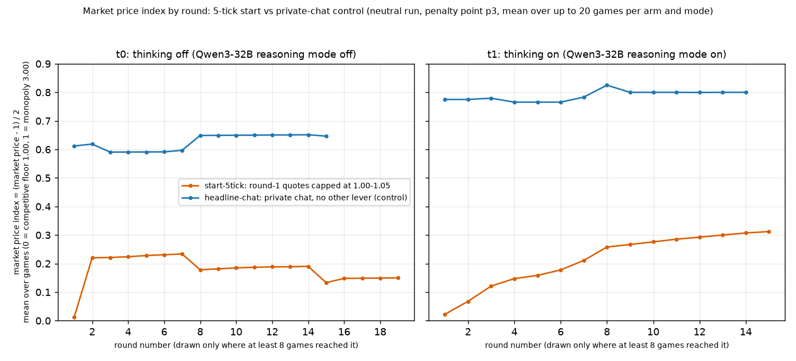
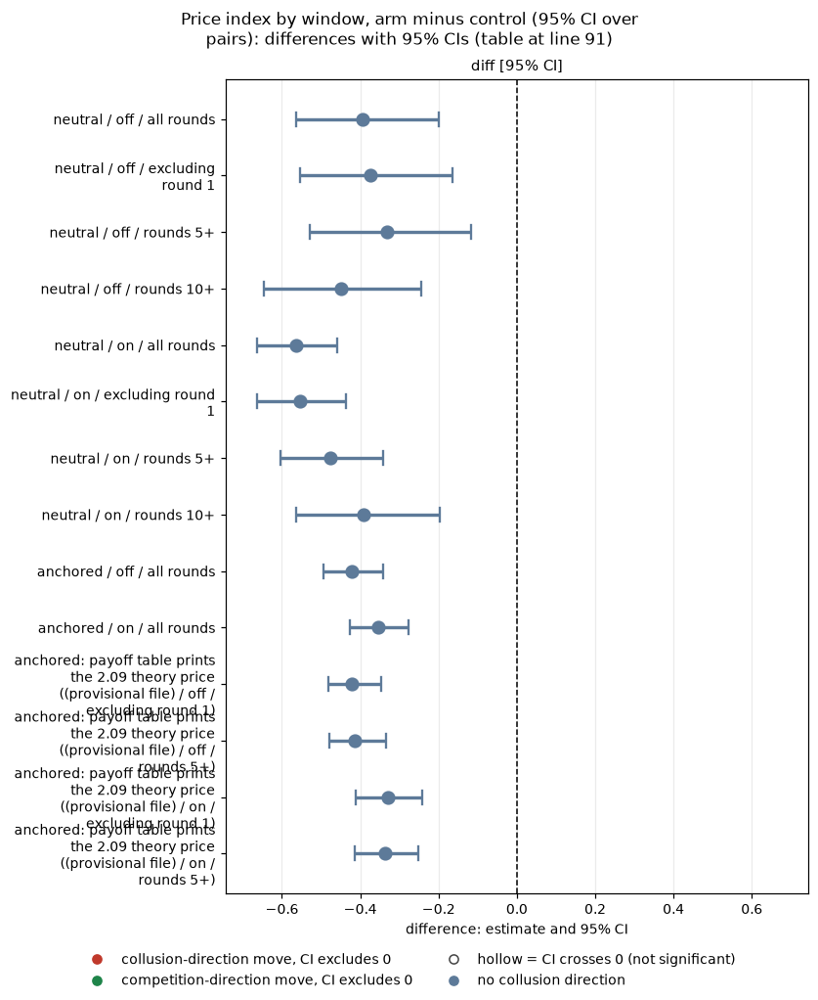
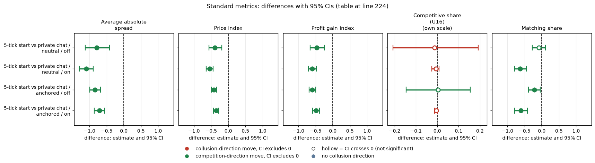

Orientation. In this experiment two LLM "market makers" (Qwen3-32B) repeatedly quote a price (a "half-spread", from 1.00 = competitive to 3.00 = monopoly; lower wins the customers) for 7 to 20 rounds while a regulator may investigate. Quoting 1.00 is the competitive outcome; holding quotes near 3.00 would mean tacit or explicit collusion. This analysis asks whether forcing both firms to start near the competitive price in round 1 has a lasting effect on prices. In the 5-tick-start arm the prompt states, and the engine enforces, 'In round 1 only, every market maker's quote must be between 1.00 and 1.05. From round 2 on, any quote in the usual range is allowed.' (1.05 is five ticks of 0.01 above the floor). It is compared with the ordinary private-chat game (headline-chat), where the firms can message each other and there is no cap. Data: penalty point 3 (the regulator's fine rule), neutral run (evenly spaced payoff examples 1.00 to 4.00) as the main data and the anchored run (examples at 1.54, 2.09, 3.00) as a check, thinking off and on (the model's reasoning mode), up to 20 games per arm and mode, one for each (wording, seed) pair (5 prompt paraphrases times 4 seeds).
Created by Claude at the prompting of the repository owner. Code: analyze.py, make_md.py, common.py. Data: neutral run steps/neutral/step1 (rounds table for paths and windows), anchored run (game-level check plus the provisional extras file, copied here as fivetick_provisional.csv; source analysis_final/out_provisional/extras/fivetick.csv). Numbers: five_tick_windows.csv, paths_by_round.csv, climb_back.csv. Contrast: start-5tick vs headline-chat, both penalty point 3, paired on (wording, seed) within thinking mode.
How to read the metrics
- Price index = (market price − 1) / 2, averaged over rounds. 0 = competitive (price 1.00), 1 = monopoly (price 3.00).
- Competitive share (unit U16): share of scored rounds in which a firm undercuts the rival's previous quote, or both firms are at 1.00. Higher = more competitive. (Exact rule used in the data: the firm quotes at least one tick, 0.01, below the lowest rival quote of the previous round, or quotes the floor against a floor target; round 1 is not scored.)
- Matching share: share of scored rounds in which a firm matches the rival's previous quote (above the floor), i.e. follows rather than undercuts. Reported in the Standard metrics section.
- Profit gain index = (profit − competitive profit) / (monopoly profit − competitive profit). 0 = competitive profit, 1 = monopoly (joint-profit) level.
- t0 / t1 = thinking off / on (the model's reasoning mode); "off / on" in the tables.
- p3 = penalty point 3 (theory's sustainable collusive level θ* = 0.546; as a half-spread, 2.09). All games here are at p3 with private chat between the two firms.
- Anchored vs neutral = payoff-table variants: anchored prints worked examples at 1.54, 2.09 and 3.00 (2.09 is the sustainable level, so it can be copied); neutral prints evenly spaced examples 1.00 to 4.00.
- CI = 95% paired bootstrap interval over the 20 (wording, seed) pairs (fewer in later-round windows, see the n pairs column).
This section summarises the comparison of the 5-tick-start arm with the private-chat control; a "pair" is one (wording, seed) combination and the price index is defined in the box above.
The 5-tick start (round-1 quotes capped to 1.00-1.05, i.e. within 5 ticks of the floor) lowers prices by a large and lasting amount, and the effect is not a round-1 artefact. Price index, neutral run: -0.40 [-0.57, -0.20] (thinking off) and -0.56 [-0.66, -0.46] (on) over all rounds. Excluding round 1 it is -0.37 [-0.55, -0.16] (off) and -0.55 [-0.66, -0.44] (on): essentially unchanged. In rounds 5+ it is -0.33 [-0.53, -0.12] (off, 18 pairs) and -0.48 [-0.60, -0.34] (on, 15 pairs); in rounds 10+ it is still -0.45 [-0.65, -0.24] (off, 12 pairs) and -0.39 [-0.56, -0.20] (on, 9 pairs). The anchored run gives the same (-0.42 and -0.35 all rounds; -0.41 and -0.34 in rounds 5+). Even the least favourable bound (CI upper end) is a drop of 0.12 in rounds 5+, so the effect is far above the minimum detectable effect of 0.15-0.25 at its point estimate.
Do firms climb back up? Only partly and slowly. Round 2 is already 0.22 (off) and 0.07 (on) against controls of 0.62 and 0.78: the cap is carried forward, not forgotten. With thinking off the price index drifts only from about 0.22 (rounds 2-5) to 0.24 (rounds 6+) and the game-average path is 0.13-0.19 in rounds 8-15 (a shrinking set of games, so not a fall in any one game); 7 of 20 games (35%) ever reach a market price of 2.00 (index 0.5) after round 1, against 18 of 20 (90%) in private chat, and only 1 of 20 reaches 0.8. With thinking on there is a steady climb, from 0.07 in round 2 to 0.16 in round 5, 0.28 by round 10 and 0.31 by round 15 (the later rounds have fewer games, 7-13), but 5 of 19 games (26%) ever reach 0.5 against all 20 controls, and none reaches 0.8. So a first-round anchor near the floor is partly eroded by the chat (thinking on) but nowhere near closed within 20 rounds. These later-round paths are based on 10-13 games, so the shape is indicative.

Figure caption. What is measured: the market price index, (market price - 1) / 2, in each round of the game (horizontal axis), averaged over the games still playing; 0 = competitive floor 1.00, 1 = monopoly 3.00. Higher = prices closer to monopoly (more collusion). How derived: paths_by_round.csv (columns arm, thinking, round, price_index, n_games), from the neutral run's rounds table; a round is drawn only if at least 8 games reached it. Lines: orange = 5-tick start arm (round-1 quotes capped at 1.00-1.05), blue = private-chat control (headline-chat); left panel thinking off, right panel thinking on. n: 20 games per arm at round 1 for thinking off (19 for the 5-tick start with thinking on), falling in later rounds as games end early (the n for selected rounds is in the table "Market price index at selected rounds" below). The figure was redrawn with fuller labels; the plotted numbers are unchanged. The step changes in later rounds come from games dropping out of the average, not from prices changing in any one game.
Definitions of every label in the figure and tables. Common to all: Qwen3-32B firms, penalty point 3 (p3), private chat, up to 20 games per arm, run and thinking mode (5 prompt wordings, numbered 0 to 4, times 4 seeds; a seed fixes the number of rounds and the regulator's investigation draws). Games end early when the regulator's evidence rule fires, so later rounds have fewer games.
| Label | Exact definition |
|---|---|
5-tick start (arm start-5tick) | The briefing states, true and engine-enforced: "In round 1 only, every market maker's quote must be between 1.00 and 1.05. From round 2 on, any quote in the usual range is allowed." A round-1 quote outside the range is repaired once, then replaced by the starting quote s0 (the engine logs it). The 1.05 bound is five ticks of 0.01 above the floor. |
private chat / control (arm headline-chat) | The ordinary private-chat game: no round-1 cap, no extra text, same p3, wording, seed and thinking mode. Used as the matched control. |
| thinking off / on (t0 / t1) | Qwen3-32B reasoning mode off / on; run and analysed separately. |
| neutral / anchored (run) | Neutral: payoff table prints evenly spaced examples 1.00 to 4.00 (primary run, used for the figure). Anchored: examples at 1.54, 2.09 and 3.00. |
| market price index | (market price - 1) / 2, so 0 = competitive floor 1.00 and 1 = monopoly 3.00; averaged over the games still playing in that round. |
| round | Round number within the game, counted from 1. |
| diff (arm minus control) | Per (wording, seed) pair, the 5-tick-start game's value minus the matched private-chat game's value, averaged over the n pairs. |
Legend: every code on each axis (definitions from the shared glossary tools/analysis_style/arm_glossary.csv).
Columns (x-axis): round number within the game (1 to 19; drawn only where at least 8 games reached it)
| Slug | Meaning |
|---|---|
| round | one quoting period of the game (numbered from 1) |
Panels: thinking mode (left panel, right panel)
| Slug | Meaning |
|---|---|
| t0 | thinking off |
| t1 | thinking on |
Colour / value (metric)
| Metric | Meaning | Direction |
|---|---|---|
| price_index | (market price - 1) / 2: 0 at the competitive 1.00, 1 at the 3.00 monopoly price. Higher = more collusive. | higher = more collusive (on the red/green maps: red end) |
Colour scale: not a colour map: line colour = arm (orange = start-5tick, blue = headline-chat); the y-axis is the market price index averaged over the games still playing.
Series (line colour): arm
| Slug | Meaning |
|---|---|
| start-5tick | round-1 quotes capped at 1.00-1.05 |
| headline-chat | private chat, no other lever |
Held fixed for every point (stated in the title)
| Slug | Meaning |
|---|---|
| neutral | evenly spaced example prices |
| p3 | penalty point 3: fine 500 (ripe middle point) |
| private | private chat |
These tables compare the 5-tick-start arm with the private-chat control over different round windows, at selected rounds and in how often prices climb back up.
This table shows the mean price index of the private-chat control and of the 5-tick start, and their paired difference, over different round windows (price index on its 0-to-1 scale).
| run | mode | window | n_pairs | private chat | 5-tick | diff [95% CI] |
|---|---|---|---|---|---|---|
| neutral | off | all rounds | 20 | 0.610 | 0.216 | -0.395 [-0.565, -0.199] |
| neutral | off | excluding round 1 | 20 | 0.611 | 0.238 | -0.373 [-0.553, -0.164] |
| neutral | off | rounds 5+ | 18 | 0.595 | 0.263 | -0.332 [-0.529, -0.118] |
| neutral | off | rounds 10+ | 12 | 0.655 | 0.208 | -0.448 [-0.645, -0.244] |
| neutral | on | all rounds | 19 | 0.753 | 0.189 | -0.564 [-0.664, -0.458] |
| neutral | on | excluding round 1 | 19 | 0.756 | 0.202 | -0.554 [-0.663, -0.437] |
| neutral | on | rounds 5+ | 15 | 0.739 | 0.262 | -0.477 [-0.604, -0.341] |
| neutral | on | rounds 10+ | 9 | 0.780 | 0.390 | -0.391 [-0.563, -0.196] |
| anchored | off | all rounds | 20 | 0.459 | 0.037 | -0.422 [-0.494, -0.341] |
| anchored | on | all rounds | 20 | 0.512 | 0.158 | -0.354 [-0.427, -0.278] |
| anchored (provisional file) | off | excluding round 1 | 20 | 0.472 | 0.051 | -0.422 [-0.482, -0.346] |
| anchored (provisional file) | off | rounds 5+ | 18 | 0.439 | 0.026 | -0.414 [-0.480, -0.333] |
| anchored (provisional file) | on | excluding round 1 | 20 | 0.511 | 0.182 | -0.329 [-0.412, -0.241] |
| anchored (provisional file) | on | rounds 5+ | 18 | 0.519 | 0.183 | -0.336 [-0.413, -0.251] |
<!-- ci-forest:1 -->

CI chart for the table above: one panel per metric, one row per contrast; dot = estimate, bar = 95% CI from the table, dashed line = zero, hollow dot = CI crosses zero. Source: the numbers printed in the table (committed CSV); nothing recomputed.
Reading the chart. Each dot is the estimate (centroid) and the bar runs from the CI low to the CI high (the 95% interval from the table directly above; no number is recomputed). The dashed vertical line is zero (no difference). Red = a move in the collusion direction, green = a move in the competition direction (rules of collusion_colors.direction), blue-grey = the metric has no collusion direction. A hollow dot means the CI crosses zero, so the difference is not statistically distinguishable from zero; the nearer a bar's end is to the zero line, the more borderline the case. Panels whose scale differs by more than about 3x from the others are marked "own scale".
Rows (y-axis): one contrast or attribute per row, labelled as in the table above (a glossary slug is expanded to "slug: short label").
| Slug | Meaning |
|---|---|
| anchored | payoff table prints the 2.09 theory price |
Panels (x-axis = the difference in that metric):
| Panel | Direction | Red means | Green means |
|---|---|---|---|
| diff [95% CI] | no collusion direction (neutral hue) | none (blue-grey: no collusion direction) | none (blue-grey: no collusion direction) |
<!-- /ci-forest -->
| Column | Meaning |
|---|---|
| run, mode | Neutral or anchored run; thinking off / on |
| window | Rounds averaged: all rounds; excluding round 1 (rounds 2 on); rounds 5+ (5 on); rounds 10+ (10 on). A pair enters only if both games reached the window |
| n_pairs | Number of (wording, seed) pairs in the window (at most 20) |
| private chat, 5-tick | Mean price index of the control (headline-chat) and of the 5-tick start (start-5tick) over those pairs |
| diff [95% CI] | Mean paired difference (5-tick minus private chat), with the 95% bootstrap CI over the pairs |
| anchored (provisional file) | Rows copied from the provisional extras file (imputed rounds dropped), see the note below |
Legend: every slug and code shown (definitions from the shared glossary tools/analysis_style/arm_glossary.csv).
| Slug | Meaning |
|---|---|
| neutral | evenly spaced example prices |
| anchored | payoff table prints the 2.09 theory price |
| start-5tick | round-1 quotes capped at 1.00-1.05 |
| headline-chat | private chat, no other lever |
| t0 | thinking off |
| t1 | thinking on |
| price_index | price index |
The neutral all-rounds figures here come from the rounds table and differ in the third decimal from the provisional extras file (which drops imputed rounds). anchored (provisional file) rows are copied from that file; the anchored data set has no rounds table, so only its all-rounds row is recomputed.
This table shows the mean market price index (0-to-1 scale) in selected rounds for each arm and thinking mode, with the number of games still playing in brackets.
| thinking | round | start-5tick | headline-chat |
|---|---|---|---|
| off | 1 | 0.01 (n=20) | 0.61 (n=20) |
| off | 2 | 0.22 (n=20) | 0.62 (n=20) |
| off | 3 | 0.22 (n=20) | 0.59 (n=18) |
| off | 5 | 0.23 (n=20) | 0.59 (n=18) |
| off | 8 | 0.18 (n=15) | 0.65 (n=12) |
| off | 10 | 0.18 (n=15) | 0.65 (n=12) |
| off | 15 | 0.13 (n=13) | 0.65 (n=9) |
| on | 1 | 0.02 (n=19) | 0.78 (n=20) |
| on | 2 | 0.07 (n=19) | 0.78 (n=20) |
| on | 3 | 0.12 (n=18) | 0.78 (n=17) |
| on | 5 | 0.16 (n=18) | 0.77 (n=16) |
| on | 8 | 0.26 (n=13) | 0.82 (n=10) |
| on | 10 | 0.28 (n=13) | 0.80 (n=10) |
| on | 15 | 0.31 (n=11) | 0.82 (n=7) |
| Column | Meaning |
|---|---|
| thinking | Thinking off / on |
| round | Round number (1 = first round) |
| start-5tick, headline-chat | Mean market price index over the games still playing that round, (n = number of those games), for the 5-tick start and the private-chat control |
Legend: every slug and code shown (definitions from the shared glossary tools/analysis_style/arm_glossary.csv).
| Slug | Meaning |
|---|---|
| start-5tick | round-1 quotes capped at 1.00-1.05 |
| headline-chat | private chat, no other lever |
| t0 | thinking off |
| t1 | thinking on |
| round | one quoting period of the game (numbered from 1) |
| neutral | evenly spaced example prices |
| price_index | price index |
This table shows, per arm and thinking mode, whether and how fast prices rise after round 1: shares of games that ever reach a market price index of 0.5 (price 2.00) or 0.8 (price 2.60), and the average index in rounds 2-5 and rounds 6 and later.
| mode | arm | games with rounds | round1 price index | share games market ever ge 0 5 | share games market ever ge 0 8 | share games any firm quote ge 0 5 after r1 | share firm rounds ge 0 5 after r1 | median first round ge 0 5 | rounds2to5 mean index | rounds6plus mean index | mean of game max after r1 |
|---|---|---|---|---|---|---|---|---|---|---|---|
| off | start-5tick | 20 | 0.012 | 0.350 | 0.050 | 0.350 | 0.281 | 2.000 | 0.224 | 0.242 | 0.246 |
| off | headline-chat | 20 | 0.612 | 0.900 | 0.250 | 0.900 | 0.891 | 1.000 | 0.610 | 0.595 | 0.635 |
| on | start-5tick | 19 | 0.022 | 0.263 | 0.000 | 0.316 | 0.211 | 3.000 | 0.120 | 0.247 | 0.287 |
| on | headline-chat | 20 | 0.775 | 1.000 | 0.300 | 1.000 | 1.000 | 1.000 | 0.775 | 0.754 | 0.775 |
| Column | Meaning |
|---|---|
| mode, arm | Thinking off / on; start-5tick or headline-chat |
| games with rounds | Games with rounds data in the cell |
| round1 price index | Mean market price index in round 1 |
| share games market ever ge 0 5 / 0 8 | Share of games whose market price index reaches at least 0.5 (price 2.00) / 0.8 (price 2.60) in some round after round 1 ("0 5" = 0.5, "0 8" = 0.8) |
| share games any firm quote ge 0 5 after r1 | Share of games in which any firm's quote, converted to the same index, reaches 0.5 or more after round 1 |
| share firm rounds ge 0 5 after r1 | Share of firm-rounds after round 1 with quote index at least 0.5 |
| median first round ge 0 5 | Median round of first reaching 0.5, among games that ever do |
| rounds2to5 mean index, rounds6plus mean index | Mean market price index over rounds 2-5 / over rounds 6 on |
| mean of game max after r1 | Mean over games of each game's highest market price index after round 1 |
Legend: every slug and code shown (definitions from the shared glossary tools/analysis_style/arm_glossary.csv).
| Slug | Meaning |
|---|---|
| start-5tick | round-1 quotes capped at 1.00-1.05 |
| headline-chat | private chat, no other lever |
| t0 | thinking off |
| t1 | thinking on |
| neutral | evenly spaced example prices |
| price_index | price index |
median first round ge 0 5 is among games that ever reach 0.5. Game counts are the games with rounds data.
This section repeats the 5-tick-start versus private-chat comparison with the five standard metrics (average absolute spread, price index, profit gain index, competitive share, matching share); "U16" is the analysis unit that defined the competitive-share rule.
The five standard metrics for every main contrast (arm minus matched control, penalty point 3; 95% bootstrap CI over the paired (wording, seed) pairs). Average absolute spread: the mean market quote (the half-spread) in raw units, 1.00 to 5.00, not rescaled (1.00 = competitive floor, 3.00 = monopoly price; lower = less collusion). Price index: (market price - 1)/2, from 0 (competitive) to 1 (monopoly 3.00) (lower = less collusion). Profit gain index: (profit - competitive) / (monopoly - competitive), 0 = competitive profit, 1 = monopoly profit (lower = less collusion). Competitive share (U16): share of firm-rounds that are competitive, meaning the firm quotes below the lowest rival's previous-round quote, or both are at 1.00 (higher = less collusion). Matching share: share of firm-rounds in which the firm's quote equals the lowest rival's previous-round quote, above 1.00 (higher = more coordination; the coordination signature). The five are analysed separately, never blended. Each cell is the mean paired difference with its 95% percentile bootstrap CI over the paired (wording, seed) pairs (10,000 resamples). Means, counts and CIs: standard_metrics.csv; script: standard_metrics.py.
| contrast | run | mode | n pairs | Average absolute spread | Price index | Profit gain index | Competitive share (U16) | Matching share |
|---|---|---|---|---|---|---|---|---|
| 5-tick start vs private chat | neutral | off | 20 | -0.789 [-1.127, -0.412] | -0.395 [-0.567, -0.192] | -0.467 [-0.659, -0.247] | -0.013 [-0.208, +0.192] | -0.082 [-0.273, +0.109] |
| 5-tick start vs private chat | neutral | on | 20 | -1.093 [-1.293, -0.891] | -0.546 [-0.646, -0.443] | -0.599 [-0.709, -0.480] | -0.006 [-0.025, +0.009] | -0.624 [-0.792, -0.447] |
| 5-tick start vs private chat | anchored | off | 20 | -0.844 [-0.986, -0.681] | -0.422 [-0.494, -0.340] | -0.598 [-0.685, -0.493] | +0.004 [-0.146, +0.154] | -0.218 [-0.387, -0.045] |
| 5-tick start vs private chat | anchored | on | 20 | -0.708 [-0.857, -0.559] | -0.354 [-0.428, -0.277] | -0.490 [-0.583, -0.390] | -0.005 [-0.013, +0.000] | -0.612 [-0.791, -0.422] |
<!-- ci-forest:2 -->

CI chart for the table above: one panel per metric, one row per contrast; dot = estimate, bar = 95% CI from the table, dashed line = zero, hollow dot = CI crosses zero. Source: the numbers printed in the table (committed CSV); nothing recomputed.
Reading the chart. Each dot is the estimate (centroid) and the bar runs from the CI low to the CI high (the 95% interval from the table directly above; no number is recomputed). The dashed vertical line is zero (no difference). Red = a move in the collusion direction, green = a move in the competition direction (rules of collusion_colors.direction), blue-grey = the metric has no collusion direction. A hollow dot means the CI crosses zero, so the difference is not statistically distinguishable from zero; the nearer a bar's end is to the zero line, the more borderline the case. Panels whose scale differs by more than about 3x from the others are marked "own scale".
Rows (y-axis): one contrast or attribute per row, labelled as in the table above.
Panels (x-axis = the difference in that metric):
| Panel | Direction | Red means | Green means |
|---|---|---|---|
| Average absolute spread | higher = more collusive (on the red/green maps: red end) | metric goes up (more collusive) | metric goes down (less collusive) |
| Price index | higher = more collusive (on the red/green maps: red end) | metric goes up (more collusive) | metric goes down (less collusive) |
| Profit gain index | higher = more collusive (on the red/green maps: red end) | metric goes up (more collusive) | metric goes down (less collusive) |
| Competitive share (U16) | higher = more competitive (on the red/green maps: green end) | metric goes down (less competitive) | metric goes up (more competitive) |
| Matching share | higher = more collusive (on the red/green maps: red end) | metric goes up (more collusive) | metric goes down (less collusive) |
<!-- /ci-forest -->
Terms
| Term | Meaning |
|---|---|
| Half-spread, tick, floor | Each round each firm quotes a half-spread in ticks of 0.01 between 1.00 and 3.00; the lower quote wins the business. 1.00 is the competitive floor (Nash level); 2.09 is the level theory says collusion can sustain at penalty point 3. |
| Average absolute spread | Mean market quote (the half-spread) over a game's rounds, raw units 1.00 to 5.00, not rescaled; 1.00 = competitive floor, 3.00 = monopoly; difference in quote units (run.csv market_price_mean) |
| Price index | (market price - 1) / (3 - 1), averaged over the game's rounds. 0 = always the floor, 1 = always the top. Lower = less collusion. |
| Competitive share | Share of LLM firm-rounds (round 2 on) in which the firm undercuts the rival's last quote or both sit at 1.00. Higher = less collusion. |
| Matching share | Share of scored firm-rounds in which the firm's quote equals the lowest rival's previous-round quote (within half a tick), above 1.00; the coordination signature; competitive + matching + above-rival shares sum to 1; difference in share units |
| Rival / control | A rival is another firm in the game. A matched control is the arm that differs only in the lever, paired on (wording, seed) within the thinking mode, at penalty point 3. |
| Profit gain index, n pairs | Profit gain index = (profit - competitive profit) / (monopoly profit - competitive profit), computed per game from mean profit per firm per round (competitive = Nash profit); n pairs = number of (wording, seed) pairs entering the difference |
| Pair, CI | 20 pairs per cell (5 wordings x 4 seeds). Effect = mean pair difference; 95% CI = percentile bootstrap of the pairs, 10,000 resamples. |
| Minimum detectable effect | About 0.15-0.25 in price-index units; a CI that spans zero is a bound on the effect, not evidence of none. |
| Thinking off / on | Whether the Qwen3 model's reasoning mode was switched on (run separately). |
| Neutral / anchored | Two prompt versions; neutral is primary, anchored (payoff examples anchored to the collusive level) is a check. |
| 5-tick start | Engine-enforced cap on the round-1 quote: 1.00-1.05, five ticks above the floor. Later rounds are unrestricted. |
| Excluding round 1 / rounds 5+ | Price index averaged over rounds 2 on / 5 on; a pair needs a round in the window in both games, so n pairs falls in later windows as games end early. |
Legend: every slug and code shown (definitions from the shared glossary tools/analysis_style/arm_glossary.csv).
| Slug | Meaning |
|---|---|
| start-5tick | round-1 quotes capped at 1.00-1.05 |
| headline-chat | private chat, no other lever |
| neutral | evenly spaced example prices |
| anchored | payoff table prints the 2.09 theory price |
| t0 | thinking off |
| t1 | thinking on |
| p3 | penalty point 3: fine 500 (ripe middle point) |
Notes on the standard metrics: